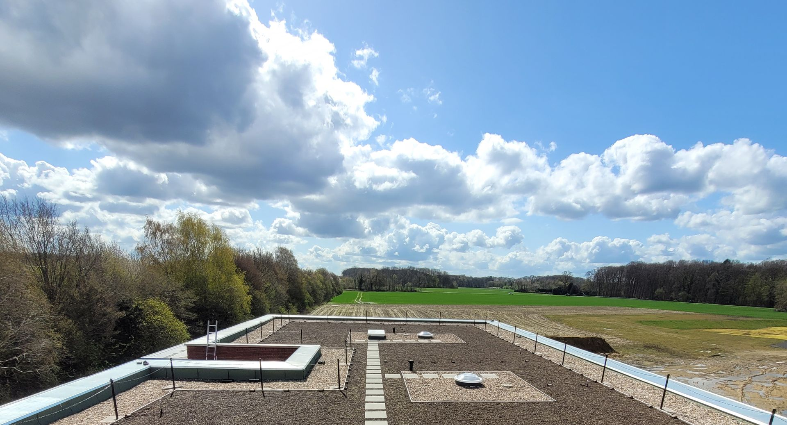
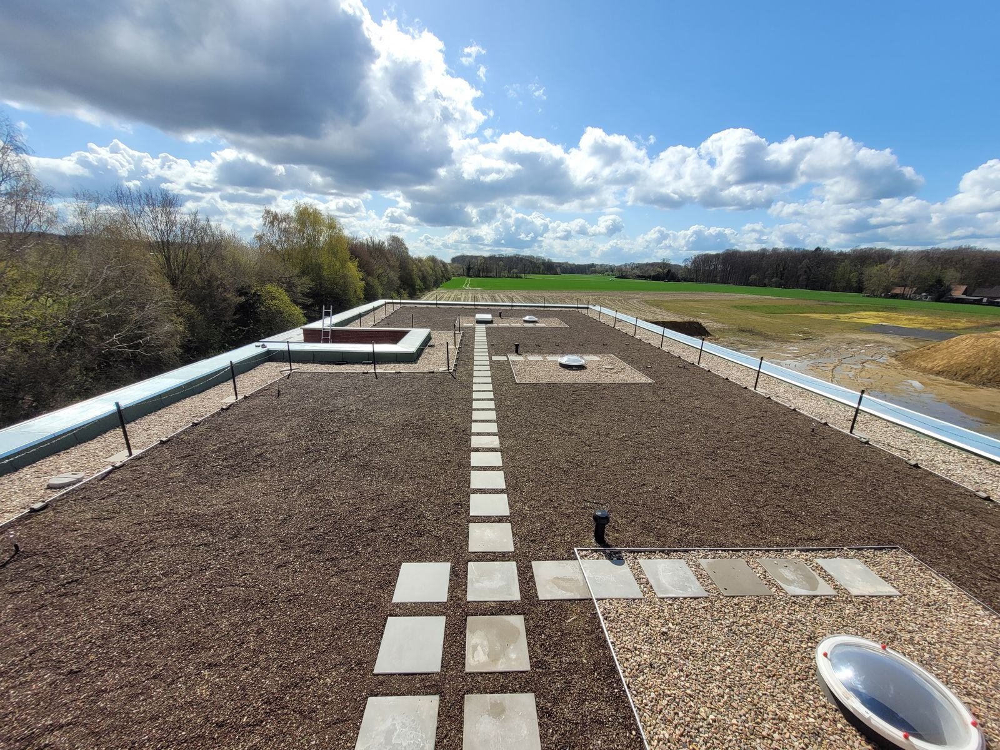
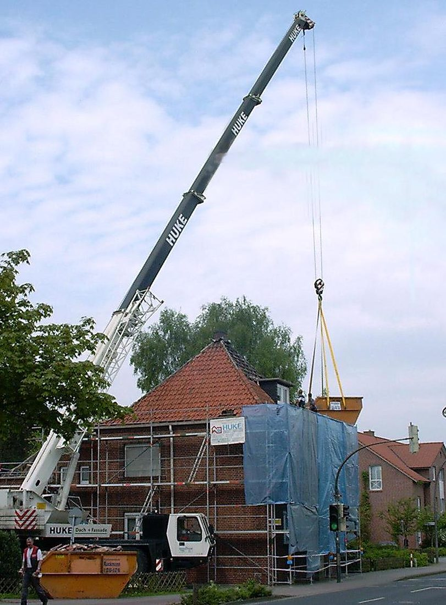
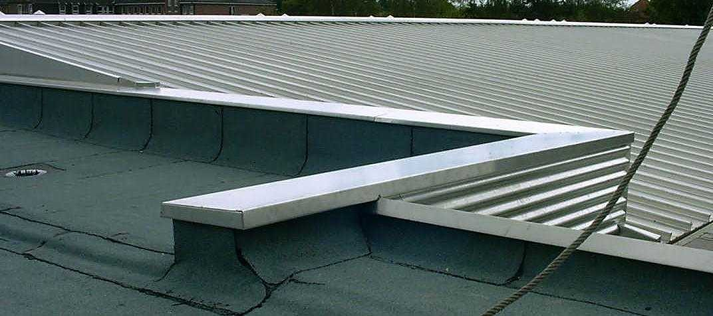
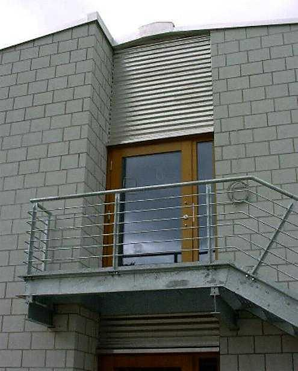
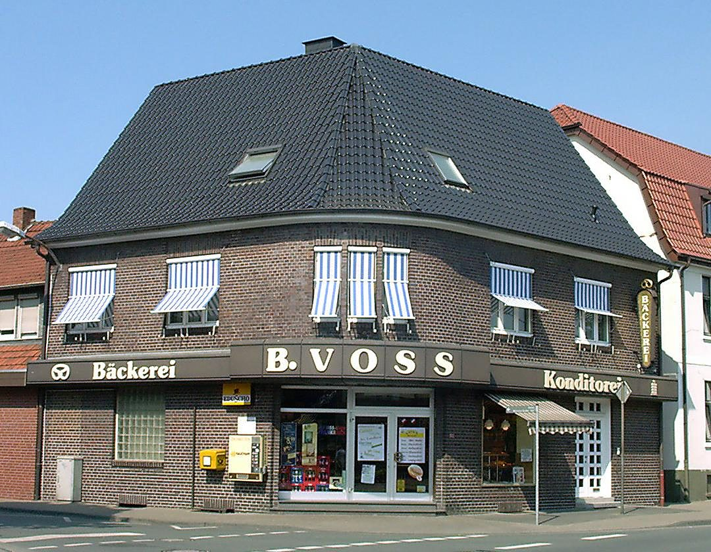
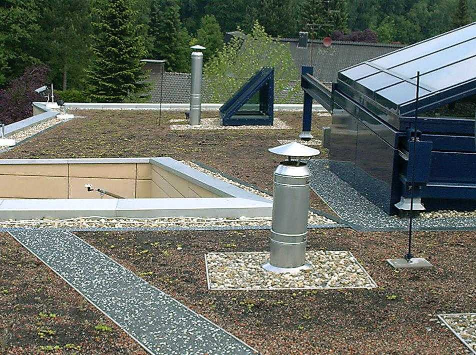
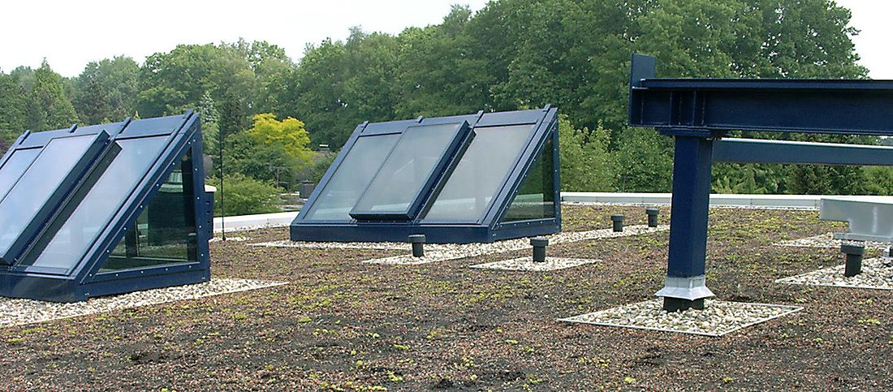
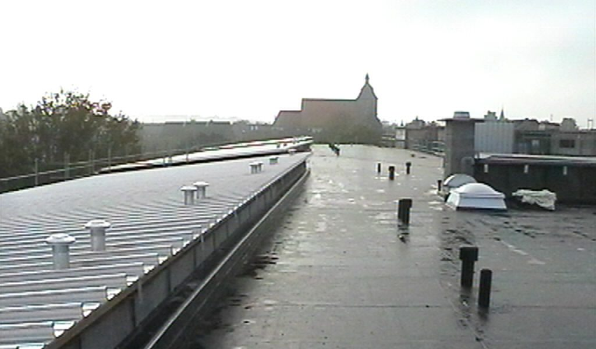

Flachdach und Gründach
Abdichtung, Dämmung, Begrünung, Kies. Neu oder saniert.

Ochtrup · seit 1969
Flach- und Steildächer, Gründächer, Bauklempnerei und Fassaden. Im Umkreis von 50 Kilometern.
Blatt 01 · Draufsicht
Ein Flachdach aus unserer Arbeit, fotografiert im April 2021. Tippen Sie auf eine Position: So viel steckt in einem Dach.

Blatt 02 · Leistungen
Abdichtung, Dämmung, Begrünung, Kies. Neu oder saniert.
Satteldächer, Eindeckung mit Ziegel, Beton oder Holz.
Rinnen, Abdeckungen, Anschlüsse in Alu, Zink oder Kupfer.
Bekleidungen für Neubau und Bestand, sauber an Dach und Fenster angeschlossen.
Das Gerüst kommt von uns. Ein Ansprechpartner weniger.
Vor Ort ansehen, aufmessen, Lösung besprechen.

Blatt 03 · Eigener Autokran
Mit dem eigenen Autokran kommen Dachmaterial, Container und schwere Teile direkt dorthin, wo sie gebraucht werden. Schnell auf- und abgebaut, auch für kleinere Arbeiten.
Blatt 04 · Objekte
Eine Auswahl aus unserem Archiv.






Hinweis im Entwurf: Archivfotos. Aktuelle Projekte kommen hinzu.
Blatt 05 · Betrieb
1969 von Günther Huke gegründet, heute geführt von Michael Huke. Ein Dachdeckermeisterbetrieb, der seit über fünfzig Jahren Dächer und Fassaden rund um Ochtrup baut.
Qualität und Leistung haben uns über Ochtrup hinaus bekannt gemacht. Maschinen sparen Zeit auf der Baustelle, Schulungen halten unsere Leute auf dem neuesten Stand der Technik.
Legende · Materialien
„Egal ob Holz, Ziegel, Beton, Alu, Zink oder Kupfer: Wir haben die richtigen Leute dafür.“
Dachdecker ist ein Beruf mit Aussicht. Interesse? Ein kurzer Anruf genügt, oder Sie schicken uns eine Nachricht.
Blatt 06 · Anfrage
Ein paar Angaben genügen. Wir melden uns, schauen uns das Dach an und besprechen alles Weitere persönlich.
Mo–Fr 8–17 Uhr
huke-dach@t-online.de